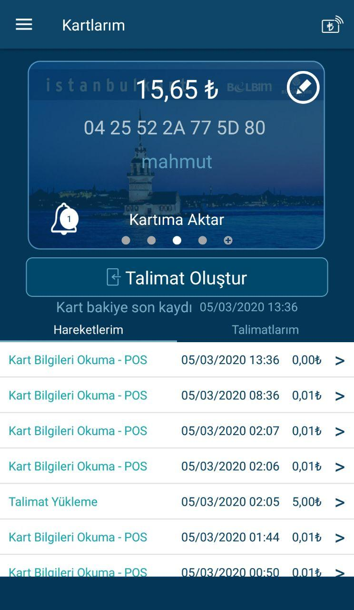
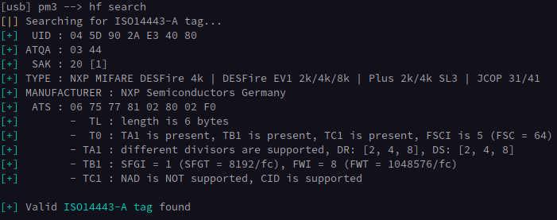
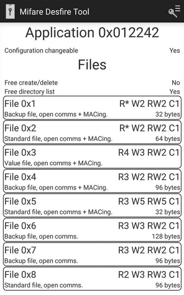

NFC Series : 1 - Exploring Istanbulkart with Proxmark and Frida
Introduction
This post will be about Istanbul transportion card named as Istanbulkart and my learning experience about MIFARE Desfire EV1 with proxmark and frida. And at the end I will try to list all information about card.
Table of Contents:
- Mobile App
- MIFARE Desfire EV1
- Proxmark
- Frida
Mobile App
Our mission starts at the app called istanbulkart. After you register to the app, cards can be added to application. To register card you can follow two ways. Add manually or let the app (with nfc) read card id. Then you will be faced to following view. (sorry no english version)

You can see card’s balance and transactions. If your phone have NFC feature, you can do more things with the app. App contains 2 NFC related features:
- Balance check ( with top right button )
- Add balance to card after payment ( Notification Bell )
To do NFC related things, application follows these steps :
- get NFC Related commands from server
- send commands to the card
- send response of the command to the server
- goto step 1
App works as a Proxy between server and card. So app doesn’t have any master key or such to create authenticated sessions.
Application has some anti-reverse techniques such as SSLPinning and obfuscation of strings (AllatoriDemo). You can bypass SSLPinning easily with following related class then either removing the code and repacking or bypassing with frida. I did first one with apktool. For obfuscation you can write simple python script to deobfuscate strings since allatori is not that complicated.
Application basically has two traffic:
- Web
- NFC
For both I will use frida. (Instead of burp because I’m such a mazosist)
Frida
I didn’t have rooted phone with NFC. But you don’t need rooted phone to use frida :D Simply follow this post to inject frida-gadget to app.
To hook NFC commands, you need to hook android.nfc.tech.IsoDep.transceive function. To get clear outputs cast byte array to java array and use some util function to convert it to hex arrays :
Java.perform(function() { |
Application use retrofit class to http requests. To hook retrofit request and responses :
Java.perform(function() { |
To follow https requests you can also read logcat since app logs all requests :facepalm:
MIFARE Desfire EV1
To understand NFC traffic between card and application we need to understand the protocol. In istanbulkart. MIFARE Desfire EV1 is used. You can find type of the card phone(nfc applications) or proxmark. There are numerous applications to read card information with NFC in play store.
I use proxmark to interact with card. Here is the output of proxmark command: hf search which gives type of the card.

Since Desfire EV1 is ISO-14443 A compliant here is the full command list:
| Command | Value |
|---|---|
| change key setting | 0x54 |
| get key settings | 0x45 |
| change key | 0xc4 |
| get key version | 0x64 |
| create application | 0xca |
| delete app | 0xda |
| get app ids | 0x6a |
| get df names | 0x6d |
| select app | 0x5a |
| format picc | 0xfc |
| get Version | 0x60 |
| free mem | 0x6e ?? |
| Set config | 0x5c 00 |
| set key | 0x5c 01 |
| set ats | 0x5c 02 |
| get card uid raw | 0x51 |
| get file uids | 0x6f |
| get iso file ids | 0x61 |
| get file settings | 0xf5 |
| change file settings | 0x5f |
| create value file | 0xcc |
| create linear record file | 0xc1 |
| create cyclic record file | 0xc0 |
| delete file | 0xdf |
| read data | 0xbd |
| write data | 0x3d |
| get value | 0x6c |
| credit | 0x0c |
| debit | 0xdc |
| limited credit | 0x1c |
| write record | 0x3b |
| read record | 0xbb |
| clear record file | 0xeb |
| commit transaction | 0xc7 |
| abort transaction | 0xa7 |
There are basically 3 response header you can get after sending a command to card:
- 00 = OK
- AE = Authentication Error. Means you cant interact with file current auth. ( different key or no auth session )
- AF = Additional frame. Means you need to send/receive more data.
Desfire EV1 contains a cryptographically authenticated filesystem. There can be different applications inside of app. (There are 4 different applications in Istanbulkart). Each app contains files that you can access with certain keys.

You can get applications,files that defined in application and access conditions for files without authenticating. wrapped or raw mode can be used with proxmark :
- hf 14a apdu -stk 6A ( get app ids )
- hf 14a apdu -st 5A APPID ( select app 422201 )
- hf 14a apdu -st 6F ( get file ids )
- hf 14a apdu -st F5 FILEID ( get file settings )
To do this process automatically use hf mfdes enum with proxmark. Or if you have a phone with nfc use Desfire Tool app.

Example communication.>> 5A 42 22 01 // SELECT APP 42 22 01
<< 00 // OK, IM COOL WITH THAT
>> F5 01 // GET FILE SETTINGS 01
<< 00 01 01 21E2 200000 // Resp 1 byte,Type 1 byte,Comm 1 byte, Acc 2 byte,Fsize 3 byte
Response of get file settings command, contains type of file, communication mode, access bytes and file size.
There are different type of files and communication modes.
+-------------+ |
Backup files are general files that holds a data. Value files are used for holding a integer values. Like balance :)
Access bytes are defined as follows :
| 15 12 | 11 8 | 7 4 | 3 0 |
|---|---|---|---|
| Read Access | Write Access | Read&Write | Change Access Rights |
16 different value:
- maximum 14 key: Value of each byte corresponds to assigned key
- 14 (0xE) means free access
- 15 (0xF) means no access
>> F5 01 // GET FILE SETTINGS 01 |
21E2 -> littleendian -> E221
E221 means -> R*,W2,RW2,C1 (* means everyone can read)
Authentication
Here is the how authentication works in Desfire EV1:
Card and reader make 3 way handshake (without sending the key obviously so we can’t sniff it).
Card >> Nonce(1) | Reader >> Nonce(2) | Card >> Auth1
To make succesfull auth session, reader needs to know keys. After authentication steps are completed, communication continue on mode of command that you use or File that command is interacting with.
What is communication mode ?
There are 3 different communication mode;
- Plaintext Debug
- DES/3DES (MAC’d/enciphered) Legacy
- 2k/3k-3DES or AES (MAC’d/enciphered) Modern
Plaintext is without any protection, so you can MITM and send forged commands.
MAC’d mode is done with some cool cryptography including session key and current command. It has following structure:
Command|MAC so you can see command, but you cant forge a response/request since MAC will be invalid.
In enciphered mode you can’t see the command. I will touch the details of difference between legacy and modern mode afterwards.
In istanbulkart DES/3DES with MAC is used in legacy mode.
l0gging
To get nfc traffic between card and app, we can use our frida script defined above.